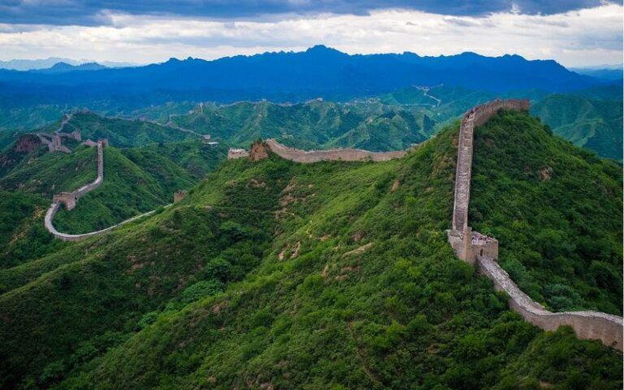
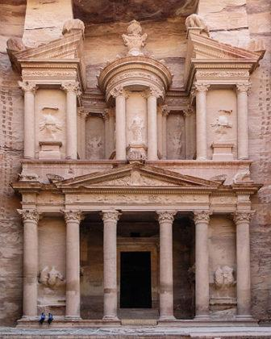
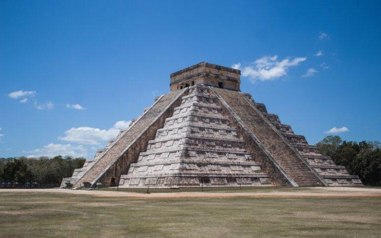
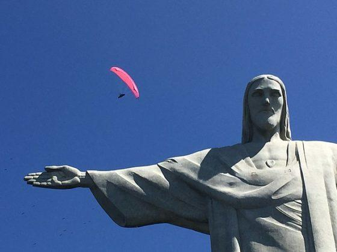
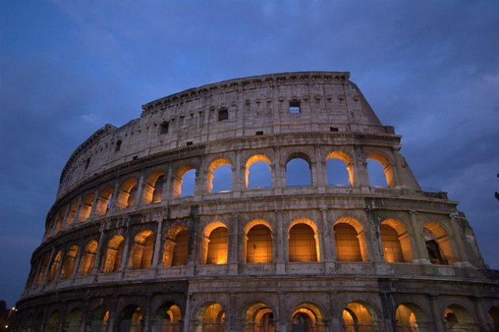
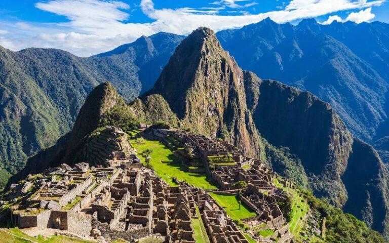
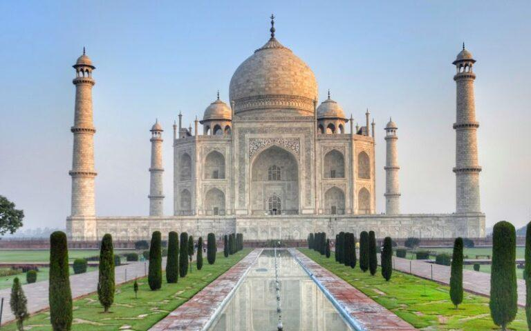

Esta impresionante construcción fue ordenada por el emperador Qin, se comenzó en el siglo V a.C., y se culminó en 1368. Principalmente, fue edificada con la finalidad de proteger sus territorios de la invasión de los mongoles.
En esta ciudad llegaron a vivir unas 30.000 personas, pero en el siglo VII d.C. fue abandonada. Por lo tanto, se consideró perdida hasta su redescubrimiento en el siglo XIX. Su edificación más conocida, llamada Al Khazneh, fue hallada por el explorador Johann Ludwig en 1812.
Esta ciudad maya ubicada en México fue construida aproximadamente entre el 435 y el 455 d.C. Según los historiadores, fue el centro económico y político más importante de esta civilización, especialmente entre 750 y 1200 d.C.
El Cristo Redentor, también conocido como Cristo de Corcovado, es una estatua de 38 metros ubicada sobre un monte en Río de Janeiro, Brasil. Esto convierte a la escultura en uno de los principales atractivos turísticos del país sudamericano.
Este anfiteatro, ubicado en Roma y también conocido como el Coliseo romano, fue mandado construir en el 72 d.C., durante el gobierno del emperador Vespasiano. Sin embargo, su inauguración se hizo en el 80 d.C. bajo el mandato de Tito.
Esta ciudad, ubicada en las altas montañas del Perú, fue construida por los incas. Los restos de esta civilización se encuentran a 2.350 m s.n.m. y están compuestos por una serie de antiguos palacios y templos, algunos de los cuales estuvieron recubiertos de oro. La construcción data del siglo XV.
El Taj Mahal, ubicado en la India, consiste en un enorme mausoleo mandado a construir por Shah Jahan, el quinto emperador mogol y musulmán. Este gobernante quiso erigir uno de los más impactantes monumentos de la humanidad para honrar a su difunta esposa, la princesa Mumtaz Mahal, quien falleció dando a luz a su decimocuarto hijo.

LAS 7 MARAVILLAS DEL MUNDO MODERNO
Las siete maravillas modernas fueron seleccionadas por ciudadanos de todo el mundo mediante una votación programada por una fundación llamada New Open World en 2005, que tenía la finalidad de desarrollar un concurso internacional donde la población menos interesada en la cultura pudiese sentirse partícipe dentro de la historia universal.
Esta votación se hizo mediante correo electrónico y mensajes de texto, aunque también se podía participar a través de la televisión y del teléfono fijo, lo que implicaba el pago de una pequeña cuota. Los resultados se revelaron en 2007, en una ceremonia celebrada en el Estadio de la Luz de Lisboa. El hombre detrás de esta idea fue el escritor francés Bernard Weber.
Las 7 maravillas del mundo moderno
Las 7 maravillas del mundo moderno son un conjunto de obras realizadas por el ser humano caracterizadas no solo por su belleza y magnificencia arquitectónica, sino también por su importancia social en la historia de la humanidad. Dichas obras están repartidas a lo largo del planeta, por lo que cada una posee particularidades culturales.
Autor: EFRAIN TOLENTINO